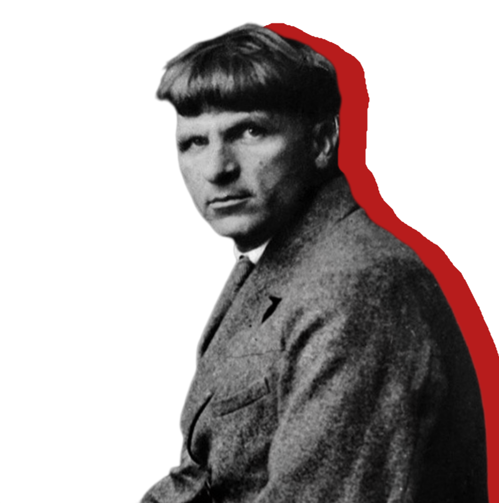
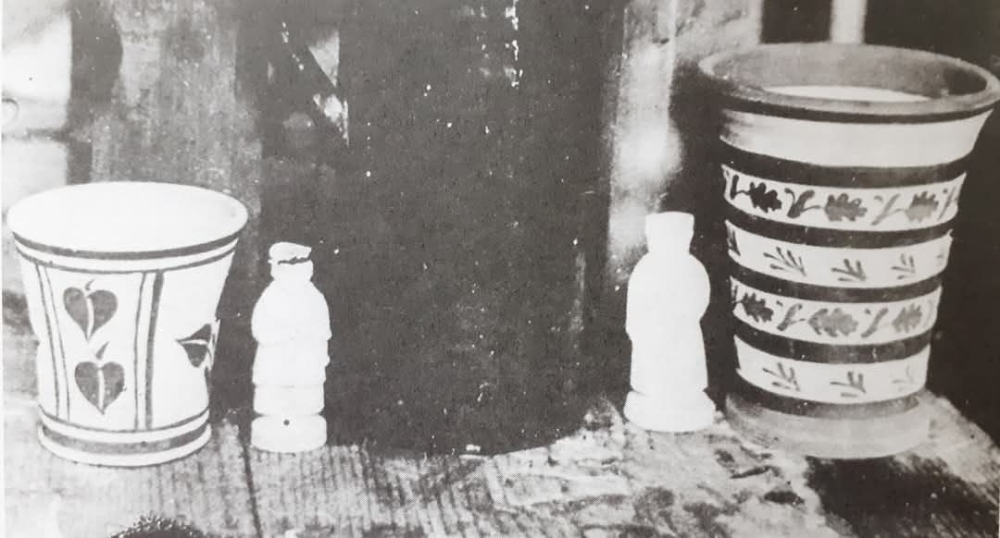
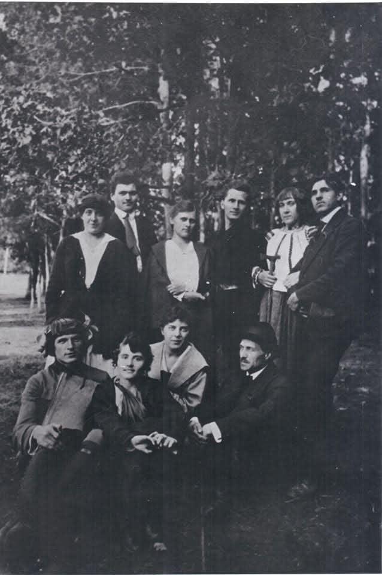
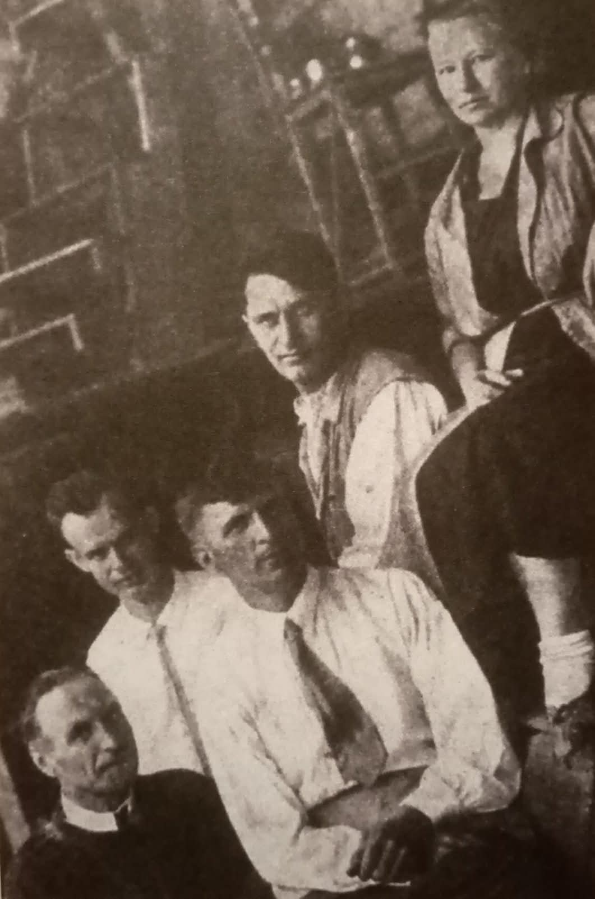
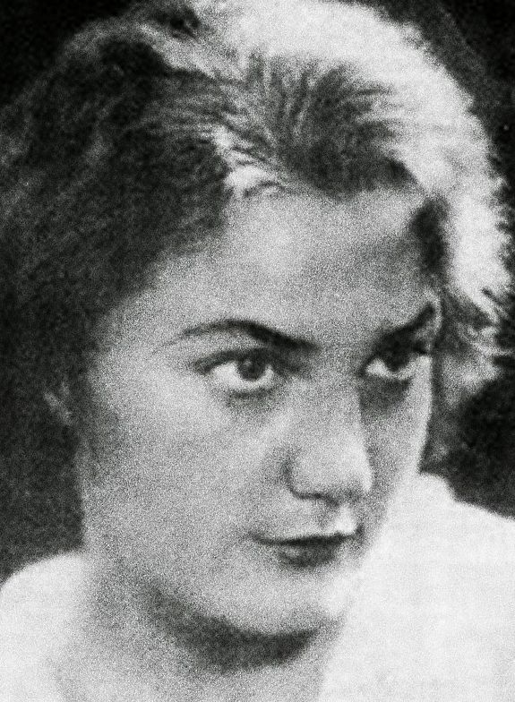

Іван Падалка
1894-1937
«Мистецтво - душа України»
1894-1937
«Мистецтво - душа України»
Іван Іванович Падалка був не просто українським художником, а справжнім митцем, чия творчість залишила глибокий слід в історії національного мистецтва. Він належав до яскравого покоління, що творило в епоху Розстріляного відродження – періоду короткого, але надзвичайно плідного розквіту української культури на початку XX століття.
Проте, трагічна доля спіткала Івана Падалку, як і багатьох інших представників Розстріляного відродження. У часи сталінських репресій він став жертвою безпідставних звинувачень і був розстріляний. Його життя обірвалося на злеті творчих сил, а його ім'я на довгі роки було викреслено з історії мистецтва.
Народився 15 листопада 1894 р. у багатодітній родині хлібороба в селі Жорнокльови Золотоніського повіту на Полтавщині (сучасна Черкащина). Батько походив з козацького роду, був письменним.
Майбутній митець навчався спочатку в церковно-парафіяльній, а згодом у дворічній міністерській школі. Талант художника проявився із самого дитинства. За клопотанням місцевого дворянина Іван отримав стипендію, завдяки чому мав можливість навчатися в Миргородській художньо-промисловій школі ім. М. Гоголя, де відвідував заняття відомого українського художника Опанаса Сластіона. Хлопець навчався старанно, його роботи експонувалися на шкільних виставках. Однак мав бунтівну вдачу, став ініціатором учнівських виступів проти адміністрації закладу й окремих викладачів. Це було причиною відрахування зі школи.
У 1913 р. вступив до Київського художнього училища, де навчався у Федора Кричевського. Активно долучався до звітних виставок учнівських творів. Наприклад, у лютому 1915 р. Іван презентував 13 робіт: 7 ілюстрацій до казок, 3 ілюстрації до поеми “Катерина” Т. Шевченка, ескіз килима і 2 етюди. Як бачимо, у колі творчих інтересів художника-початківця — графіка і декоративно-ужиткове мистецтво.
У 1917 р. вступив до Української академії мистецтв у майстерню Михайла Бойчука, ставши одним з найкращих його учнів. Знайомство з Бойчуком відіграло вирішальну роль у професійному становленні митця, оскільки "особливість системи навчання, яку запропонував професор, полягала в тому, що була спрямована не просто на підготовку монументалістів, а давала такі основи художньої освіти, які можна було використати в різних галузях мистецтва". Тобто Михайло Бойчук готував своїх учнів до багатосторонньої художньої діяльності.
Паралельно із навчанням Падалка деякий час працював ілюстратором у Держвидавництві. Разом із Тимком Бойчуком (молодшим братом М. Бойчука) виконав ілюстрації до першого номеру дитячого журналу “Барвінок” (1919).
Отримавши освіту, молодий художник й сам почав ділитися своїми знаннями і досвідом. Викладав керамічне малювання спочатку в Миргородському, а потім у Межигірському художньо-керамічному технікумі. Протягом 1925-1934 рр. працював у графічній майстерні у Харківському художньо-промисловому інституті. Багато його учнів у подальшому зарекомендували себе як талановиті художники-графіки: Б. Бланк, М. Фрадкін, О. Довгаль, М. Котляревська, І. Хотинок та ін. Був професором живопису Київського художнього інституту (1934-1936).
Іван Падалка працював як живописець, графік, художник-монументаліст, у галузі декоративно-прикладного мистецтва. Брав участь у розписах Луцьких казарм у Києві (1919) та Червонозаводського театру в Харкові (1933-1935). Роботи митця з успіхом експонувалися на європейських і світових виставках. У 1920-х рр. ім'я Падалки було внесено до сотні найкращих художників Європи ХХ ст.
Розвиток видавничої справи 20-30-х років сприяв розквіту мистецтва української книги. Іван Падалка створював обкладинки до творів І. Нечуя-Левицького, І. Котляревського, І. Франка, В. Вражливого, Ю. Смолича, М. Йогансена, О. Досвітнього та ін. Також займався оформленням книг зарубіжних класиків. Зокрема у рідкісному фонді Гончарівки зберігаються дві книги з ілюстраціями видатного художника. Це другий том “Вибраних творів” Дені Дідро (Харків, 1933), до якого Падалка виконав суперобкладинку (у нас не збереглася), фронтиспіс, заставку і кінцівку книги. Також художник проілюстрував роман Франсіско де Кеведо Вільєгаса “Історія життя пройдисвіта, Пабло на ймення, зразка волоцюг і дзеркала крутіїв” (Київ, 1934). Падалка виконав ілюстрацію до першої частини роману, заставки і кінцівки для обох частин твору.
Звичайно, самобутній і яскравий талант Івана Падалки не вписувався в канони радянського мистецтва. 29 вересня 1936 р. художника заарештували. Його картини конфіскували, а особистий архів знищили. Був розстріляний 13 липня 1937 р. у київській тюрмі НКВД разом із М. Бойчуком та В. Седлярем.
Через кілька днів після розстрілу була заарештована дружина Івана Марія Пасько за “шпигунство та недонесення на чоловіка”. Вона була вислана на Колиму, а 14-річного сина художника відправили в дитячий будинок. Відбувши 21 рік заслання, Марія Пасько повернулася в Україну, але сина знайти так і не змогла...
